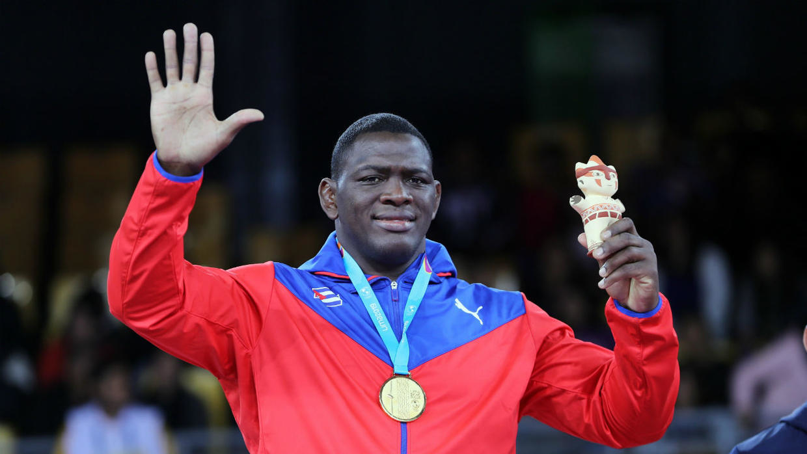
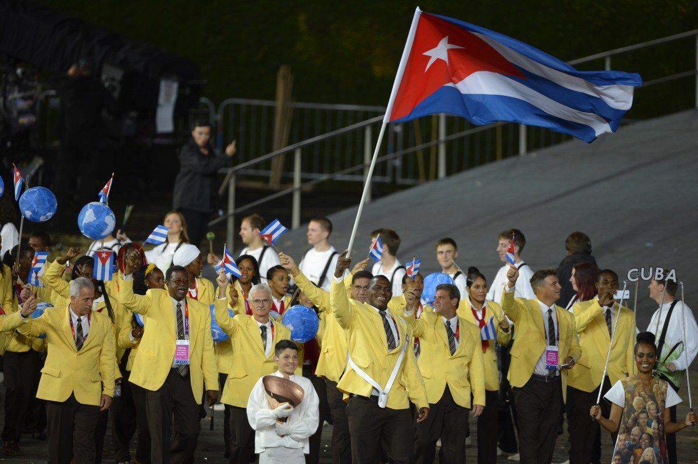

over the last 30 years cuba has won 56 gold medals, they participated in relay, marathon, long jump, tripple jump, discus throw, baseball, basketball, boxing, canoeing, cycling, fencing, judo, rowing, swimming, water polo, weight lifting, wrestling and alot more in which they won medals even gold.
In boxing and wrestling they won alot of gold and silver medals.
Mijaín LópezCuban wrestler who won three consecutive Greco-Roman wrestling gold medals at the Olympic Games (2008, 2012, and 2016). López began wrestling when he was 10 years old.Unbeaten at the Olympic Games since Beijing 2008. He is also a five-time world champion and one of the greatest wrestlers of all time.
López was nicknamed “the Kid” as an ironic nod to his incredible size and “the Terrible” in reference to his competitive nature on the wrestling mat. At his first major competition, the 2002 world championships, López finished 13th in 120-kg Greco-Roman competition. He placed 16th at the 2003 worlds but went on to achieve great success in the years that followed. He took the world title in 2005, 2007, 2009, and 2010 and finished with the silver medal in 2006 and 2011. Troubled by a thigh injury, he saw his bid for a third straight gold medal stopped by Turkey’s Riza Kayaalp in the 2011 final. López was also an eight-time winner at the Pan American Championships and took the gold medal at the Pan American Games in 2003, 2007, and 2011. He was named Cuba’s top athlete in 2007 and 2010.
Between 2004 and 2012, López finished outside the top three in a major international event only once—when he placed fifth in his Olympic debut at the 2004 Games in Athens. At the 2008 Games in Beijing, he captured his first Olympic gold medal. He defended his title at the 2012 London Games. With that win, he joined Aleksandr Karelin and Aleksandr Kolchinsky as the third wrestler to win multiple Olympic gold medals at 120 kg. He moved up to the 130-kg weight class at the Rio de Janeiro 2016 Olympic Games, where he won a third consecutive Olympic gold medal.
López was given the honour of carrying his country’s flag at the Beijing 2008 Opening Ceremony  he was also the Flagbearer for Cuba in london 2012 and Rio de Janeiro 2016. When asked which medal he was aiming to win at the Games, he smiled and left the Cuban wrestling team’s head coach Pedro Val to do the talking: “The gold medal of course. No doubt about it. Only the gold will do.”
outside of the olympics López has about 28gold medals. As part of his strategy, Lopez was absent from the competition in Nur-Sultán, with the aim of regathering his strength to ensure optimal conditions for the Tokyo 2020 Games.
Cuba has so far classified 26 athletes who will participate in 34 of the tests of the Tokyo 2020 Olympic Games.
Cuba aspires to participate in the Tokyo meeting with a delegation of 120 athletes who will participate in some 18 sports, according to the High Performance Director of the Sports Institute, José Antonio Miranda.
To that end, he indicated that there is already a pre-selection of 343 athletes from which the Cuban representation will come out in the next Olympics, to which the island goes with the pretense of being among the top 20 countries.
Among the classifieds are the champion of Greco-Roman wrestling Mijaín López, who will look in the Japanese capital for his fourth Olympic scepter, and the young specialist in launching the album, Yaimé Pérez, who goes for his first crown in these Games.
The 34 disciplines with classified Cuban athletes are athletics (10), canoeing (4), cycling (1), artistic gymnastics (2), wrestling (2), modern pentathlon (2) and shooting (5), explained the manager.
Miranda said that the number of 26 classifieds should grow from January to May with sports of ranks and brands such as athletics, badminton, judo, swimming, triathlon, beach volleyball and weightlifting.
According to Inder assessments, Cuba has achieved the best results in international competitions in sports such as wrestling, weights, judo, canoeing, beach volleyball, table tennis, badminton, triathlon and fencing.
The island competed in the 2016 Rio de Janeiro Olympic Games with a delegation of 123 athletes in 19 disciplines and their athletes won 11 medals, of which 5 were gold, 2 silver and 4 bronze.